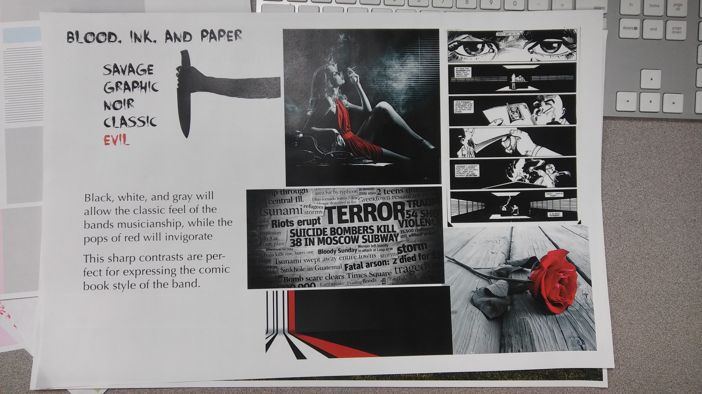
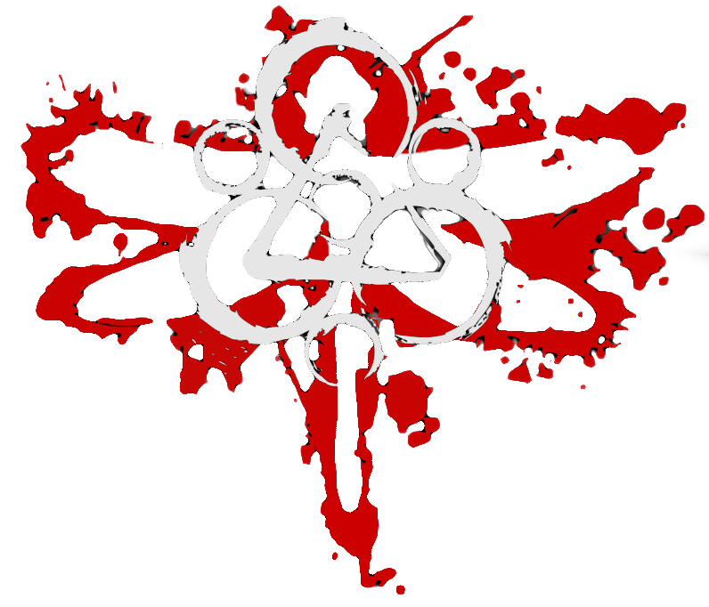

My wireframe was basically a design that I felt would compliment the main gif that I knew I wanted to include, which would set the tone of the site. I knew I wanted the gif to be the opening image, so I laid my column out so that the gif would get hierarchal prominence. I ended up combining the images to keep to the single column layout. Those images would become mashups of the band members and the bands comic books. These images were second in terms of image hierarchy. Lastly, I included the keywork and dragonfly insignias which are beloved fan favorites. The body copy was always going to be static and centered occupying more space than the keywork images, but less than the mashup images. The reason I decide to design the site this way is because of how heavy the band are into visuals.
For my website, I wanted the tone of the bands music to be reflected and introduce the tone of the supplemental graphic novels as well. I knew I wanted to explore the red,black, and white pallet that Claudio Sanchez uses in his "Kill Audio" graphic novel.
I also created a moodbaord based on the haunting feeling of a murderous family home in the country. The reason I did this is because of the community of Coheed fans. We all completely share the morbid reality of being in love with music that talks about killing children and focusing on family and love at the same time
I would mostlikely explore a bit more. I would choose more tone words to narrow down from. this time I chose "savage"
I found creating the css not so much as easy, but fun. It was definately fun which made it seem easy I guess. The font usage when uploading your own font was kind of confusing.
I would definately explore typography aqspects a bit more in my next project.
Tap the Keywork below to see the website
